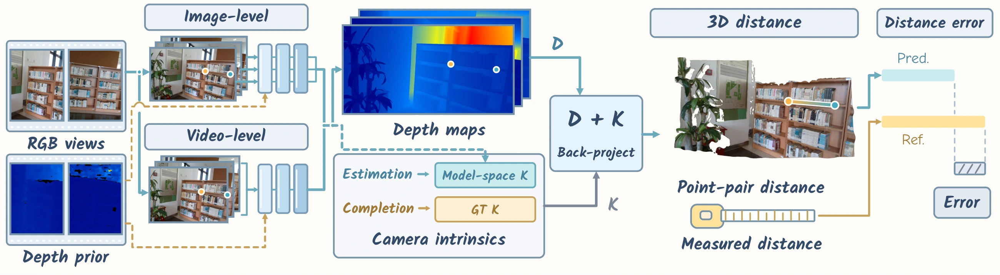
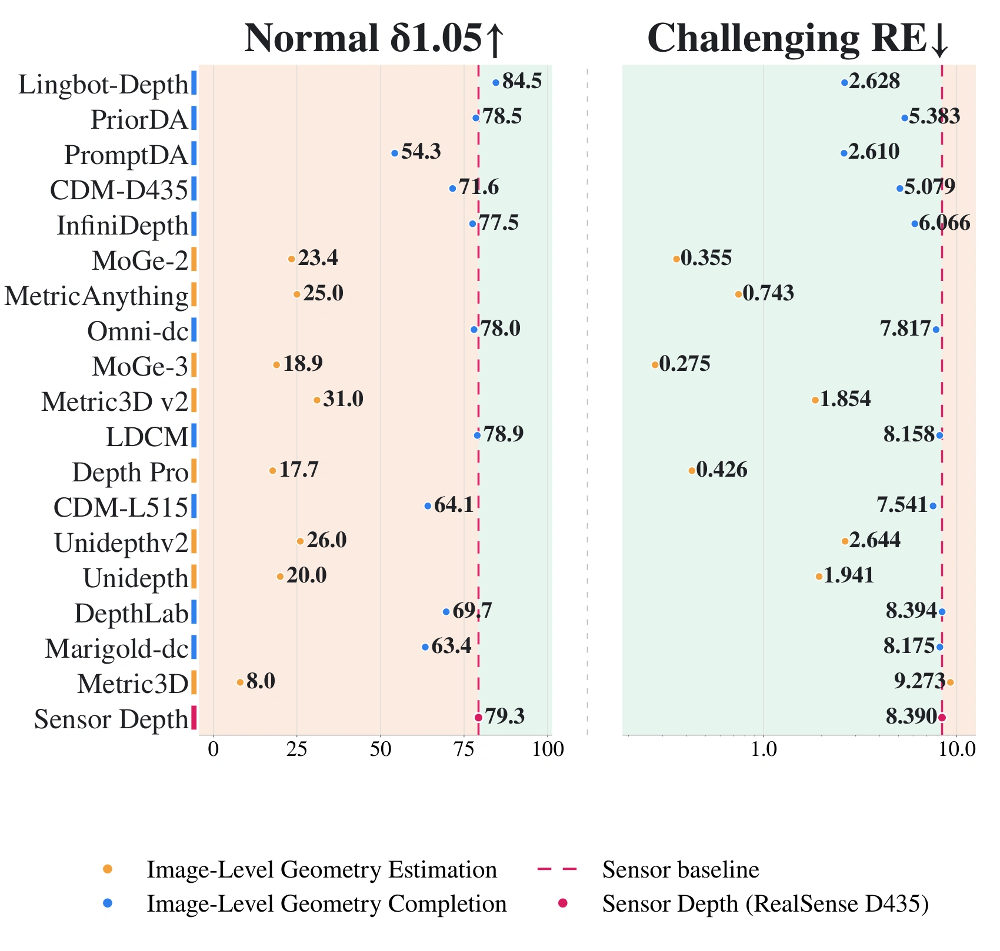
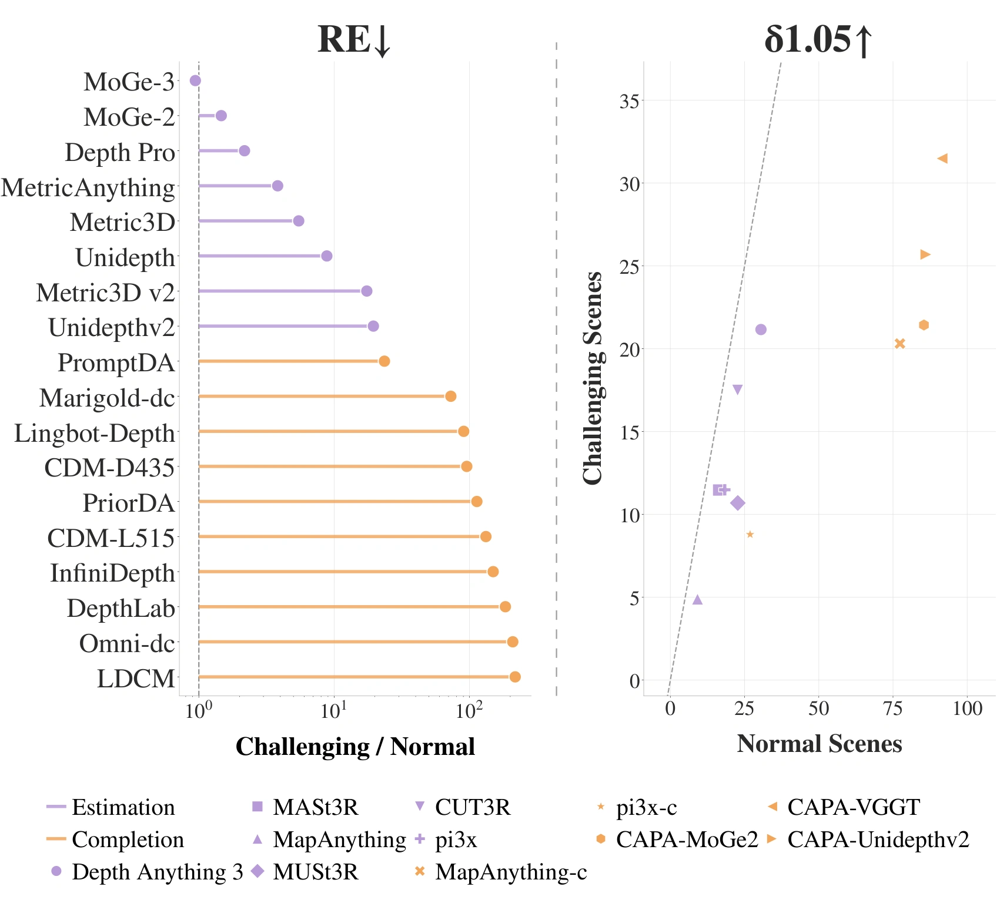
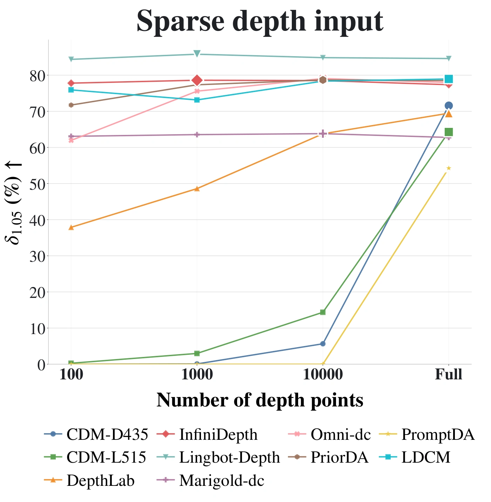
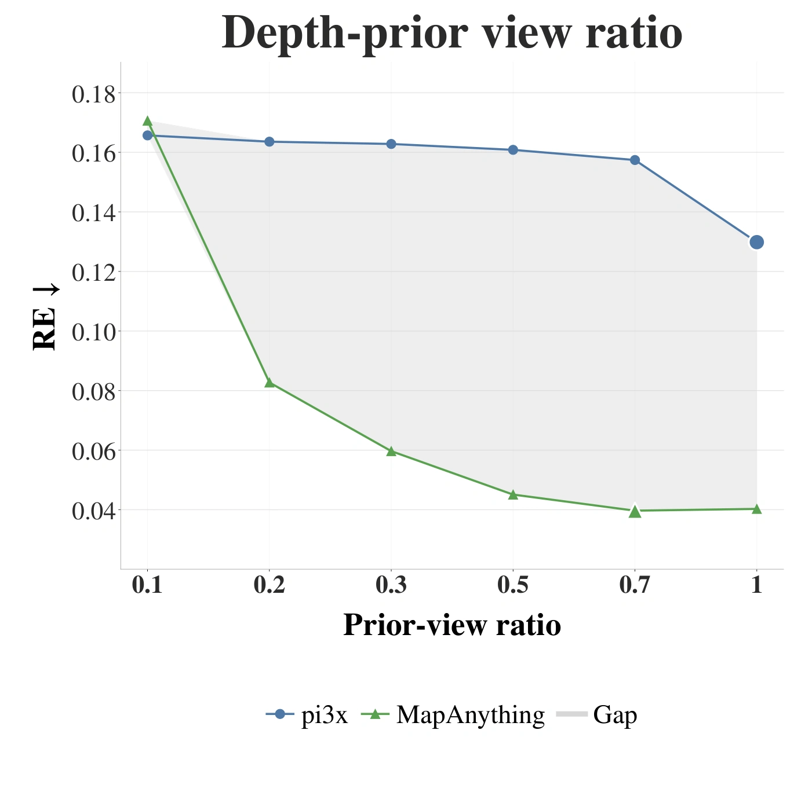
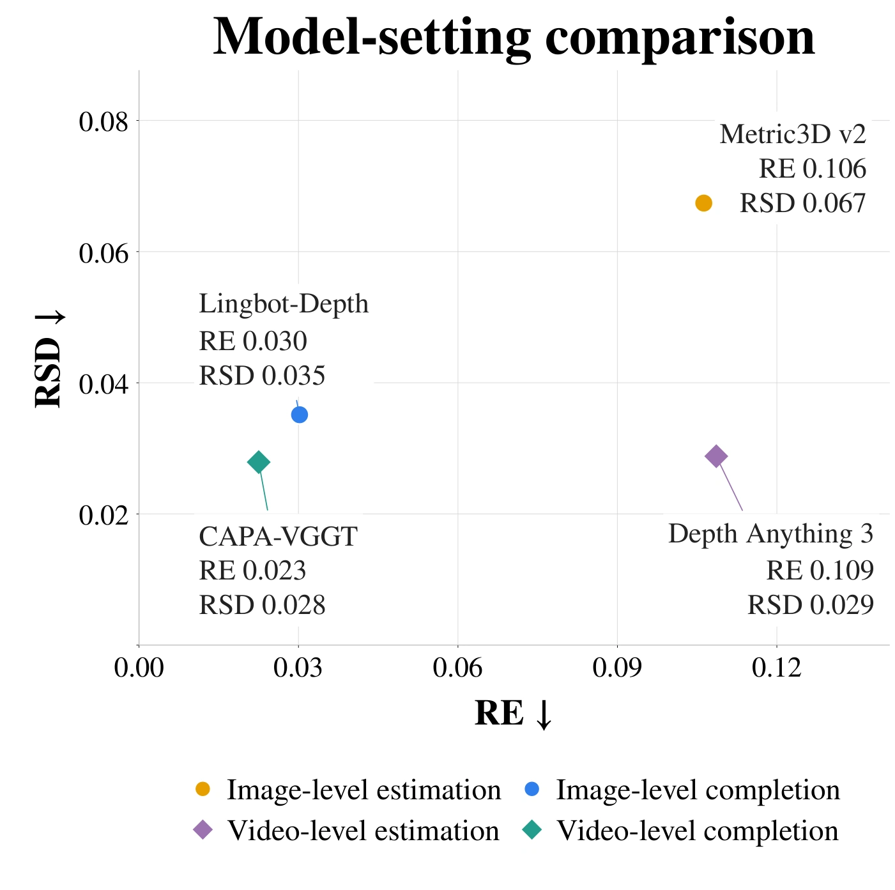

| Model | Normal 76 scenes | Challenging 24 scenes | ||||||||||||||
|---|---|---|---|---|---|---|---|---|---|---|---|---|---|---|---|---|
| AE↓ | RE↓ | LE↓ | RSD↓ | δ1.05↑ | δ1.10↑ | δ1.25↑ | Rank↓ | AE↓ | RE↓ | LE↓ | RSD↓ | δ1.05↑ | δ1.10↑ | δ1.25↑ | Rank↓ | |
| Metric3D | 1.180 | 1.695 | 0.828 | 0.347 | 8.02 | 14.68 | 27.82 | 8.00 | 5.004 | 9.273 | 1.299 | 0.672 | 7.68 | 14.13 | 23.11 | 8.00 |
| MoGe-3 | 0.208 | 0.292 | 0.236 | 0.084 | 18.89 | 35.49 | 59.89 | 6.00 | 0.158 | 0.275 | 0.228 | 0.112 | 12.63 | 26.82 | 58.20 | 3.00 |
| Depth Pro | 0.135 | 0.196 | 0.234 | 0.154 | 17.74 | 32.98 | 65.30 | 5.57 | 0.171 | 0.426 | 0.250 | 0.220 | 15.82 | 31.58 | 68.10 | 2.86 |
| Unidepth | 0.159 | 0.220 | 0.207 | 0.134 | 20.00 | 38.38 | 68.44 | 4.86 | 0.943 | 1.941 | 0.676 | 0.337 | 15.10 | 26.24 | 42.90 | 6.29 |
| MoGe-2 | 0.176 | 0.242 | 0.204 | 0.086 | 23.40 | 40.93 | 63.08 | 4.71 | 0.202 | 0.355 | 0.258 | 0.206 | 15.95 | 30.21 | 57.03 | 3.43 |
| MetricAnything | 0.145 | 0.194 | 0.176 | 0.089 | 25.00 | 41.28 | 66.96 | 3.43 | 0.333 | 0.743 | 0.315 | 0.242 | 18.68 | 35.35 | 64.84 | 3.57 |
| Unidepthv2 | 0.099 | 0.136 | 0.137 | 0.097 | 26.01 | 48.48 | 79.61 | 2.43 | 1.059 | 2.644 | 0.583 | 0.290 | 19.53 | 37.37 | 54.69 | 4.86 |
| Metric3D v2 | 0.073 | 0.106 | 0.104 | 0.068 | 31.00 | 56.00 | 90.42 | 1.00 | 1.126 | 1.854 | 0.513 | 0.434 | 20.57 | 41.99 | 65.95 | 4.00 |

Overview of the Pumpire evaluation protocol. Pumpire provides a unified evaluation of image- and video-level 3D foundation models under geometry estimation and completion settings. Estimation models recover geometry from RGB inputs, whereas completion models additionally condition on depth priors. Pumpire back-projects depth maps predicted by 3D foundation models with their associated camera intrinsics and quantifies the results with the proposed metrics. Their predicted distance is compared with the physically measured ground truth using the proposed metrics.
We back-project the two annotated pixels into the camera coordinate system and compute their Euclidean distance:
Here, K denotes the camera intrinsics, and the ground-truth distance dgt is obtained through physical measurement.
Let denote the number of scenes and the number of evaluated frames in scene . Since the point pair remains fixed within each scene, is shared across all frames. We evaluate each scene using Absolute Error (AE), Relative Error (RE), Logarithmic Error (LE), and Threshold Accuracy (). Define the frame-wise absolute error and distance ratio as and . The scene-level metrics are then
The benchmark-level result for each metric is obtained by averaging its scene-level values:
To evaluate cross-view consistency, we utilize Relative Standard Deviation (RSD) to measure the normalized variation of predicted distances within each sequence. For sequence , RSD is defined as
Abstract
We present Pumpire, a unified benchmark for evaluating metric point-pair distance estimation capability of both image- and video-level 3D foundation models, with or without depth priors. In contrast to previous approaches that normally evaluate depth and camera intrinsics separately or evaluate point-clouds with geometric similarity metrics, which cannot directly reflect models’ point-to-point distance estimation capability, Pumpire directly assesses point-to-point distances from the reconstructed geometry. To this end, we collect a large-scale and diverse dataset (pumpire-6k) comprising 100 real-world scenes, each annotated with physically measured point-pair distances and containing 64 frames, for a total of 6,400 frames. Building on this dataset, we establish a holistic evaluation protocol that covers both image- and video-level 3D foundation models and enables direct assessment of point-pair distance errors and cross-setting comparison. We conduct extensive experiments across 29 baseline configurations of representative 3D foundation models and provide a comprehensive analysis of the results. By offering this benchmark, we target the more fundamental ability to perceive and estimate physical scale in the reconstructed 3D space, which prior evaluation protocols have largely overlooked.
Motivation
- Existing benchmarks for depth and camera intrinsics estimation are insufficient to characterize a model's point-pair distance estimation capability. Finding 1 shows that strong performance on depth and camera intrinsics benchmarks—even when considered jointly—does not necessarily translate into accurate metric distance estimation, highlighting the need for direct evaluation of point-pair distances.
- Existing point-cloud benchmarks are also not designed to directly evaluate metric point-pair distance estimation. Current benchmarks primarily assess geometric fidelity using metrics such as Chamfer Distance, Accuracy, Completion, and F1-Score, or point-wise reconstruction errors, rather than directly evaluating the accuracy of metric distance estimation between arbitrary point pairs. Meanwhile, recent spatial reasoning benchmarks explicitly evaluate metric distance reasoning, but at a coarse, object-level granularity through question answering. Consequently, neither benchmark type directly assesses metric distance estimation at the point level, leaving the ability to recover physical distances between arbitrary point pairs insufficiently evaluated.
- There is no evaluation framework that enables unified comparisons of metric 3D foundation models across image- and video-level estimation and completion settings. Existing benchmarks are fragmented: some target image-level estimation or completion, while others focus on video-level estimation or completion. This fragmentation limits unified comparison of 3D foundation models across different settings.
Dataset: pumpire-6k
We curate a real-world benchmark dataset comprising 100 diverse scenes and 6,400 frames, annotated with physically measured point-pair distances and spanning indoor and outdoor environments with varying levels of difficulty, enabling comprehensive evaluation of metric 3D foundation models under diverse real-world conditions.
Quantitative Results
Table highlights: Best, Second best, Third best.
Comprehensive Insights
Finding 1
Direct evaluation of point-pair distance estimation.
The coupling between predicted depth and camera intrinsics renders their separate evaluation insufficient for reliably characterizing point-pair distance estimation.
Depth and intrinsics benchmark rankings
Average rank ↓ across 12 depth metrics and 24 intrinsics metrics. Bold: best; underlined: second best.
| Benchmark | Depth Pro | MoGe-2 | MetricAnything | Unidepth | Unidepthv2 |
|---|---|---|---|---|---|
| Depth benchmark | 4.25 | 2.83 | 2.75 | 2.08 | 2.83 |
| Intrinsics benchmark | 2.89 | 1.00 | 1.50 | 3.46 | 3.83 |
| Overall rank | 3.57 | 1.92 | 2.13 | 2.77 | 3.33 |
See detailed resultsHide detailed results
Depth benchmark results for image-level metric geometry estimation models.
| Model | NYU-D | KITTI | DIODE | ETH3D | ||||||||
|---|---|---|---|---|---|---|---|---|---|---|---|---|
| AbsRel ↓ | L1 (m) ↓ | δ1.25 ↑ | AbsRel ↓ | L1 (m) ↓ | δ1.25 ↑ | AbsRel ↓ | L1 (m) ↓ | δ1.25 ↑ | AbsRel ↓ | L1 (m) ↓ | δ1.25 ↑ | |
| Depth Pro | 0.09 | 0.25 | 0.93 | 0.14 | 2.34 | 0.83 | 0.40 | 4.46 | 0.41 | 0.38 | 3.25 | 0.33 |
| MoGe-2 | 0.08 | 0.21 | 0.96 | 0.21 | 3.59 | 0.45 | 0.33 | 2.62 | 0.54 | 0.10 | 0.62 | 0.88 |
| MetricAnything | 0.10 | 0.27 | 0.94 | 0.09 | 1.60 | 0.94 | 0.34 | 2.49 | 0.65 | 0.11 | 0.67 | 0.90 |
| Unidepth | 0.06 | 0.14 | 0.98 | 0.05 | 1.04 | 0.98 | 0.27 | 2.64 | 0.67 | 0.58 | 3.20 | 0.14 |
| Unidepthv2 | 0.07 | 0.18 | 0.96 | 0.09 | 1.58 | 0.95 | 0.78 | 7.07 | 0.54 | 0.21 | 1.23 | 0.68 |
Intrinsics benchmark results for image-level metric geometry estimation models.
@1/5/10° refer to AUC@1/5/10°. vFoV, hFoV refer to vertical FoV and horizontal FoV. Methods trained on evaluated datasets are in gray and excluded from the ranking to ensure a fair comparison
LaMAR-2K
| Model | vFoV | hFoV | ||||
|---|---|---|---|---|---|---|
| @1° | @5° | @10° | @1° | @5° | @10° | |
| Depth Pro | 0.121 | 0.235 | 0.377 | 0.136 | 0.260 | 0.447 |
| MoGe-2 | 0.243 | 0.526 | 0.727 | 0.287 | 0.581 | 0.766 |
| MetricAnything | 0.224 | 0.493 | 0.698 | 0.262 | 0.548 | 0.743 |
| Unidepth | 0.051 | 0.371 | 0.491 | 0.015 | 0.324 | 0.479 |
| Unidepthv2 | 0.040 | 0.123 | 0.312 | 0.055 | 0.193 | 0.423 |
MegaDepth-2K
| Model | vFoV | hFoV | ||||
|---|---|---|---|---|---|---|
| @1° | @5° | @10° | @1° | @5° | @10° | |
| Depth Pro | 0.196 | 0.449 | 0.660 | 0.176 | 0.423 | 0.636 |
| MoGe-2 | 0.176 | 0.412 | 0.618 | 0.174 | 0.397 | 0.593 |
| MetricAnything | 0.270 | 0.537 | 0.722 | 0.252 | 0.514 | 0.702 |
| Unidepth | 0.068 | 0.162 | 0.274 | 0.058 | 0.149 | 0.253 |
| Unidepthv2 | 0.124 | 0.305 | 0.494 | 0.120 | 0.289 | 0.475 |
Stanford2D3D
| Model | vFoV | hFoV | ||||
|---|---|---|---|---|---|---|
| @1° | @5° | @10° | @1° | @5° | @10° | |
| Depth Pro | 0.058 | 0.157 | 0.263 | 0.050 | 0.134 | 0.233 |
| MoGe-2 | 0.094 | 0.269 | 0.487 | 0.087 | 0.249 | 0.454 |
| MetricAnything | 0.078 | 0.194 | 0.326 | 0.062 | 0.164 | 0.289 |
| Unidepth | 0.032 | 0.085 | 0.172 | 0.028 | 0.077 | 0.150 |
| Unidepthv2 | 0.048 | 0.132 | 0.247 | 0.043 | 0.116 | 0.224 |
TartanAir
| Model | vFoV | hFoV | ||||
|---|---|---|---|---|---|---|
| @1° | @5° | @10° | @1° | @5° | @10° | |
| Depth Pro | 0.556 | 0.740 | 0.859 | 0.549 | 0.730 | 0.851 |
| MoGe-2 | 0.009 | 0.080 | 0.314 | 0.009 | 0.074 | 0.303 |
| MetricAnything | 0.364 | 0.702 | 0.847 | 0.353 | 0.688 | 0.839 |
| Unidepth | 0.008 | 0.016 | 0.030 | 0.006 | 0.015 | 0.031 |
| Unidepthv2 | 0.000 | 0.004 | 0.093 | 0.000 | 0.004 | 0.083 |
Image-level geometry estimation using ground-truth intrinsics
Normal subset. Parentheses show changes relative to the corresponding image-level estimation results: green for improvements and red for degradations. AE is in meters; δ is in %.
| Model | AE ↓ | RE ↓ | LE ↓ | RSD ↓ | δ1.05 ↑ | δ1.10 ↑ | δ1.25 ↑ | Rank ↓ |
|---|---|---|---|---|---|---|---|---|
| Metric3D | 1.319 (+0.139) | 1.895 (+0.200) | 0.893 (+0.065) | 0.340 (-0.007) | 5.16 (-2.86) | 9.89 (-4.79) | 23.42 (-4.40) | 8.00 |
| Depth Pro | 0.144 (+0.009) | 0.210 (+0.014) | 0.240 (+0.006) | 0.175 (+0.021) | 16.53 (-1.21) | 31.68 (-1.30) | 62.77 (-2.53) | 5.14 |
| Unidepth | 0.205 (+0.046) | 0.287 (+0.067) | 0.246 (+0.039) | 0.121 (-0.013) | 14.68 (-5.32) | 27.22 (-11.16) | 52.55 (-15.89) | 6.86 |
| MoGe-2 | 0.172 (-0.004) | 0.229 (-0.013) | 0.208 (+0.004) | 0.095 (+0.009) | 17.00 (-6.40) | 31.50 (-9.43) | 62.29 (-0.79) | 4.86 |
| MoGe-3 | 0.185 (-0.023) | 0.253 (-0.039) | 0.220 (-0.016) | 0.093 (+0.009) | 17.19 (-1.70) | 33.68 (-1.81) | 63.34 (+3.45) | 4.43 |
| MetricAnything | 0.150 (+0.005) | 0.195 (+0.001) | 0.183 (+0.007) | 0.098 (+0.009) | 20.19 (-4.81) | 37.34 (-3.94) | 66.86 (-0.10) | 3.29 |
| Unidepthv2 | 0.121 (+0.022) | 0.165 (+0.029) | 0.153 (+0.016) | 0.098 (+0.001) | 23.58 (-2.43) | 43.01 (-5.47) | 75.41 (-4.20) | 2.29 |
| Metric3D v2 | 0.095 (+0.022) | 0.138 (+0.032) | 0.126 (+0.022) | 0.067 (-0.001) | 26.09 (-4.91) | 47.94 (-8.06) | 83.98 (-6.44) | 1.00 |
Finding 2
Sensor depth versus learned 3D foundation models.
Raw sensor depth is highly reliable on benign surfaces, but under challenging sensing conditions learned 3D foundation models are far more robust and surpass it.


Finding 3
Distinct robustness patterns of estimation and completion.
Completion and estimation models exhibit distinct robustness patterns: the former attains higher peak accuracy but degrades catastrophically on challenging scenes, the latter keeps errors bounded throughout.


Finding 4
Sparsely-sampled depth prior for image-level estimation models.
Geometry completion requires jointly addressing input sparsity and sensor noise; consequently, denser depth priors do not necessarily yield better performance.


Finding 5
Offering models with different numbers of depth priors.
Additional depth priors generally improve video-level completion, but the benefit depends on the model's ability to integrate metric information across views.


Finding 6
Comparison across model settings.
Multi-view estimation improves consistency, depth-conditioned completion improves both accuracy and consistency, and combining both performs best overall.


Qualitative Results


Citation
@misc{chen2026pumpireunifiedbenchmarkmetric,
title={Pumpire: Unified Benchmark for Metric Distance Estimation},
author={Siyu Chen and Zehan Wang and Jiayang Xu and Yihan Wu and Jialei Wang and Junming Chen and Ziang Zhang and Yutong Ying and Zhou Zhao},
year={2026},
eprint={2610.12423},
archivePrefix={arXiv},
primaryClass={cs.CV},
url={https://arxiv.org/abs/2610.12423},
}